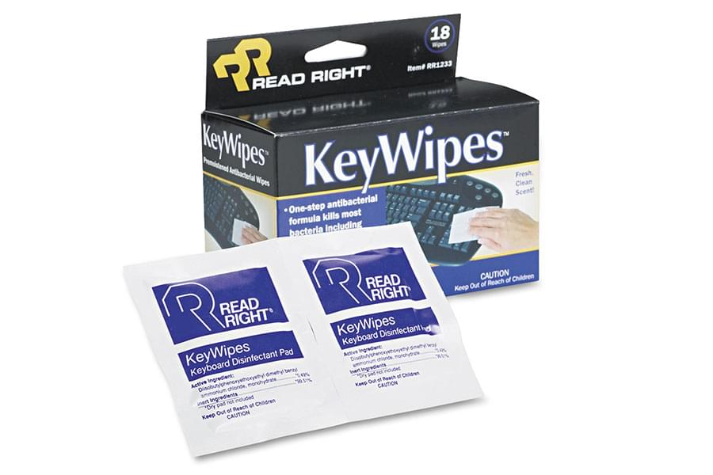
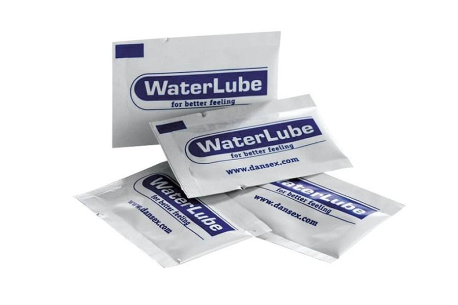
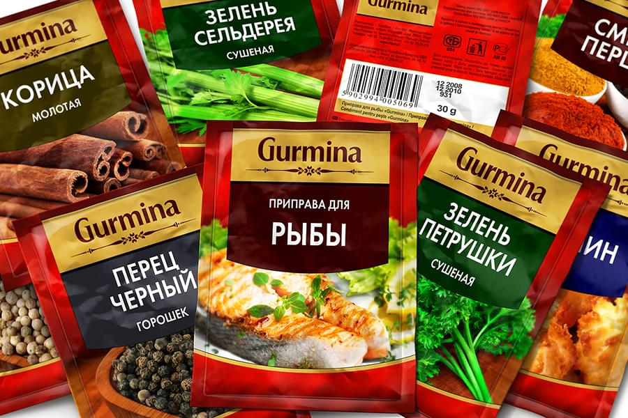
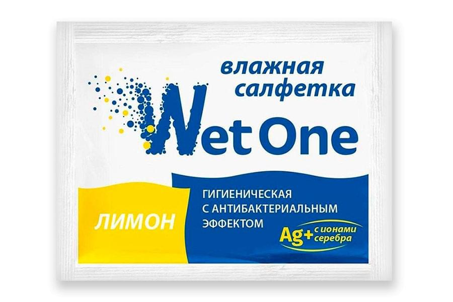
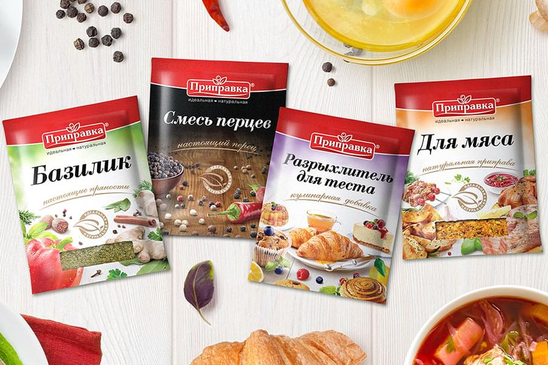

<!--#set var="title" value="Комбинированные материалы, буфлен • НекстПринт" -->
<!--#include virtual="/parts/header.html" -->
<section class="brand">
    <div class="container">
        <div class="title title_hybrid"><h3>Комбинированные материалы, буфлен</h3></div>
        <div class="swiper-container mySwiper">
            <div class="swiper-wrapper">
              <div class="swiper-slide">
                <a data-fancybox="gallery" data-src="images/dist/hybrid-materials-1.jpg">
                    
                </a>
              </div>
              <div class="swiper-slide">
                <a data-fancybox="gallery" data-src="images/dist/hybrid-materials-2.jpg">
                    
                </a>
              </div>
              <div class="swiper-slide">
                <a data-fancybox="gallery" data-src="images/dist/hybrid-materials-3.jpg">
                    
                </a>
              </div>
              <div class="swiper-slide">
                <a data-fancybox="gallery" data-src="images/dist/hybrid-materials-4.jpg">
                    
                </a>
              </div>
              <div class="swiper-slide">
                <a data-fancybox="gallery" data-src="images/dist/hybrid-materials-5.jpg">
                    
                </a>
              </div>
            </div>
            <div class="swiper-pagination"></div>
            <div class="swiper-button-prev"></div>
              <div class="swiper-button-next"></div>
        </div>
        <p>
            <strong>Комбинированный материал, буфлен представляет собой</strong> вид материала, состоящий из четырех слоев. Один из слоев, состоит из алюминиевой фольги и бумаги, соединяются при изготовлении полиэтиленом и дополнительным полимером, который наносится непосредственно на бумагу, либо фольгу. При изучении технических характеристик и свойств буфлена, выявлено, что он способствует увеличению срока хранения товара. Также комбинированный материал обеспечивает необходимые показатели устойчивости и прочности к большинству агрессивных сред: спирт, бытовые жидкости, химические различные соединения, ацетон.
        </p>
        <p>
            Благодаря тому, что комбинированные материалы и буфлен отлично склеиваются, достигается высочайшая прочность термоустойчивого шва. Сурлин способствует увеличению производительности линий по упаковке и снижает до минимума вероятность нарушения герметичности упаковки. Процесс спайки сурлина по сравнению с полиэтиленом происходит при более низких температурных режимах. Их диапазон находится в пределах от 95-1200С, что в результате ведет к увеличению скорости упаковывания продукции, а также к уменьшению потребления электрической энергии.
        </p>
        <p>
            <strong>Триплекс (BOPP/PE/PA)</strong> обладает высокими барьерными эксплутационными характеристиками, отличной термосвариваемостью, паро и воздухонепроницаемостью. Применяется в качестве основы под печать мелованной высокоглянцевой каландрированной бумаги.
        </p>
    </div> 
</section>
<!--#include virtual="/parts/consultation.html" -->
<!--#include virtual="/parts/footer.html" -->